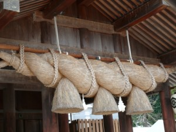
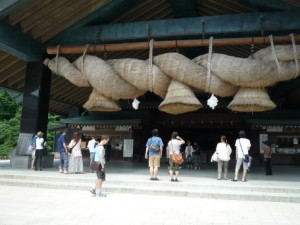
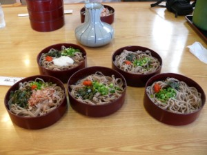
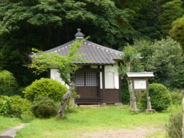
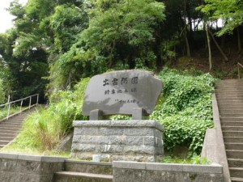
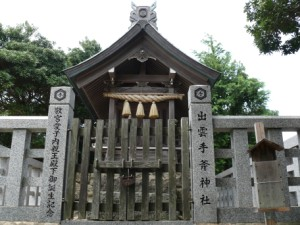

Après avoir quitté Tottori, nous sommes arrivés à Izumo, SHIMANE vers 13h. Le train qu’on a pris était plein de gens locaux, qui ne se pressaient pas du tout, pas comme à Tokyo. Très tranquille.
Izumo fut une fois une ville majeure du Japon, il y a longtemps, avant Nara et Kyoto. À ce temps-là, les Japonais dans cette région commerçaient avec les gens du continent, en introduisant au Japon non seulement des marchandises, mais aussi beaucoup de nouvelles technologies et de nouvelles connaissances. Ils avaient même constitué un régime politique indépendant. Izumo était vraiment prospère, mais malheureusement, ils furent intégrés dans l’État de Yamato, qui était à l’époque en train de gagner en puissance et d’étendre son influence dans la région de Nara actuelle. Ensuite, Yamato vainquit les familles au pouvoir dans l’ouest du Japon et établit la dynastie de Yamato à Nara. Voilà l’origine de la famille impériale du Japon…
Izumo, désignant à la fois la ville et sa région, a perdu sa puissance, mais elle est toujours considérée comme sacrée et importante aujourd’hui. L’impact que cette région avait à l’époque était, donc, énorme. Pour preuve, le nom, Izumo, apparaît souvent dans la mythologie japonaise. Tous les mythes disent que la création de la terre du Japon a eu lieu à Izumo.
Comme Izumo est l’endroit où le Japon est né, il y a des dieux très importants qui habitent dans cette région.
Et maintenant, on va découvrir cette région !
Pour aller à Izumo Taisha ( Izumo Shinto Sanctuaire ), on a emprunté le Ichibata Densha, un petit train local. Dans ce train, une demoiselle travaillait toute seule comme conductrice. Elle faisait tout, compostant les billets de passagers, menant les gens dans la bonne voie, et guidant avec des explications concises. Grâce à elle, j’ai appris qu’il y avait des fabricants de vin à Shimane. Je ne le savais pas avant.
Appréciez cette petite excursion dans le train et le paysage de la campagne japonaise.
{kind=link}
Izumo-Taisha-mae-eki est le terminus de la ligne de Ichibata Densha. Selon cette compagnie, cette gare est toujours là depuis cent ans. En 2012, c’était son centième anniversaire. Elle devait être très moderne à l’époque, car elle ne semble pas si ancienne aujourd’hui.
(photo empruntée de Wikipedia)
{kind=link}
Izumo Taisha (Izumo Shinto Sanctuaire)
{kind=link}
Quittant la petite gare historique, on a marché quelques minutes et trouvé le grand torii, la porte du sanctuaire Shinto destinée à repousser les mauvais esprits. Cet endroit est bien protégé, et donc vous aussi respectez les dieux qui habitent ici.
Le Japon est le pays des « kami », les dieux du Shinto, et Izumo Taisha est l’un des plus importants sanctuaires dédiés au dieu Okuninushi.
Vous rappelez-vous de l’histoire du lièvre de la plage Hakuto?
(Tottori )?
Okuninushi, ou Onamuchi ( son nom quand il était jeune) avait plusieurs frères plus vieux, tous dieux (formant ensemble la famille Yaso-gami). Tous voulaient se marier avec la princesse Yakami. Mais, le lièvre que Okuninushi avait sauvé à la plage Hakuto, qui était en fait lui aussi un dieu, annonça que ce serait Okuninushi qui épouserait la princesse Yakami.
Apprenant cet événement, les frères se mirent en colère et à attaquèrent leur petit frère. La mère de Okuninushi, Kami-Mushibi, lui a conseilla alors de prendre refuge dans le monde souterrain.
Arrivé là-bas, il rencontra le dieu de l’orage, Susano, et sa fille Suseri-hime. Okuninushi tomba amoureux d’elle, mais Susano devint furieux. Il donna à Okuninushi plusieurs épreuves. Vainquant tous les obstacles, Okuninushi réussit à sortir du souterrain avec Suseri-hime. Ensuite, il combattit ses frères avec des armes obtenues dans le monde souterrain. Une fois toutes ces épreuves terminées et gagnées, Okuninushi régna sur Izumo et commença à ordonner et développer le Japon.
{kind=link}
Je ne me rappelle pas combien on a marché, mais je me souviens très bien qu’il faisait très, très chaud ! Il n’y avait d’ombre nulle part.
Mais, la présence des statues du lièvre et Okuninushi, que j’ai trouvée en chemin, m’a encouragé à marcher plus.
{kind=link}
Et, finalement, on y est (voir photos ci-dessus) ! Le dieu, Okuninushi, habite ici. Le grand ornement, pendant de l’avant-toit, s’appelle « Shiménawa ». C’est une corde de paille avec des bandes de papier plié, utilisée pour repousser les mauvais esprits.
Quelques personnes jettent une pièce vers le Shiménawa, en croyant qu’ils auront un mariage heureux si la pièce reste bien coincée dedans. Mais, d’autres personnes considèrent que ces gens-là ne sont pas respectueux envers le dieu.
Une autre chose intéressante que j’ai apprise du shiménawa à Izumo Taisha est que c’est tissé dans le sens inverse, par rapport à tous les autres sanctuaires. Du coup, cette corde sacrée est conçue pour ne pas laisser les mauvais esprits sortir de l’intérieur. Bizarre, n’est-ce pas? Il y a des tas de mystères à Izumo…


Comment prier à Izumo Taisha?
Normalement, on incline la tête deux fois, tape dans ses mains deux fois, et encore incline la tête une fois. Mais, à Izumo Taisha, il faut baisser la tête deux fois, taper dans ses mains quatre fois, et baisser la tête une dernière fois.
Attention, au temple japonais, il ne faut pas taper dans ses mains fortement. Cela doit être fait doucement et sans bruit.
Voice quelques règles dans un sanctuaire shinto!
Kashiwadé (tapper dans ses mains), de la religion Shinto, signifie le claquement quand la terre et le ciel ont été créés. Autrement dit, cela symbolise le son produit lors de la naissance du Japon ! Notre mythe raconte que la déesse du soleil, Amatérasu-omikami, s’était cachée dans la grotte, parce que son frère, Susano ou le dieu de tempête, se conduisait violemment. Sans la déesse du soleil, le monde était dans l’obscurité et complètement chaotique. Finalement, quand elle sortit de la grotte, le Japon retrouva l’ordre et la prospérité. Le son de claquement évoque aussi la lumière de ce monde.
Gassho, mettre les mains, vient en revanche du bouddhisme, et donc d’Inde et d’Asie de sud-est. Il s’agit de la façon générale de saluer respectueusement les autres. Cette forme a été adoptée, et c’est encore pratiquée aujourd’hui pour prouver notre croyance dans le Bouddha.
Quand vous visitez un sanctuaire shinto, essayez de suivre ces règles :
- Inclinez la tête avant de passer la torii port, et si vous voulez marcher vers la droite, vous commencez avec la jambe droite, et vers la gauche, avec la jambe gauche. Évitez de marcher au milieu du passage, parce que c’est réservé au dieu.
- Avant de prier, purifiez vos mains et votre bouche en les rinçant avec de l’eau purifiée. Vos lèvres ne doivent pas toucher la louche rituelle.
- Quand vous êtes prêts à prier devant l’autel, évitez d’être en plein milieu. Il faut rester modeste envers le dieu.
- Ne pas jetez les pièces lors de l’offrande, le geste doit être délicat.
- Finalement, évitez de faire un vœu pour vous même, montrez d’abord votre gratitude pour le dieu.
Pourquoi Okuninushi habite ici ?
Amatérasu-omikami est la déesse majeure de la religion Shintoïste. Elle est la déesse du soleil et de l’univers. Elle envoya ses messagers à Izumo annoncer à Okuninushi que son monde devait être gouverné par ses descendants à elle. Okuninushi accepta cet ordre, à condition qu’il dispose d’un palais pour se retirer, aujourd’hui Izumo Taisha.
Certaines personnes croient que cet échange n’a, en réalité, pas bien marché et qu’Okuninushi fut à la fois désespéré et en colère d’abandonner son territoire. Voilà une théorie expliquant que le shimenawa de Izumo Taisha est tissé dans l’autre sens, de sorte que son esprit vengeur ne sorte pas dehors.
L’empereur du Japon est dit être le descendant d’Amatérasu. Cette histoire montre que la dynastie de Yamato était en train de se développer et de prendre le contrôle du Japon.

L’origine de mon pays est vraiment mystérieuse, et la lignée de la famille impériale se poursuit. Regardez l’arbre dans la photo ci-dessus. Cet arbre, à la périphérie du sanctuaire de Izumo Taisha, fut planté quand notre futur empereur, Hisahito, est né en 2006.

Encore plus de choses à essayer!
Il y a beaucoup de magasins de souvenirs et de restaurants dans la ville. Nous avons décidé de goûter les soba d’Izumo pour notre déjeuner.

Après le repas, nous avons continué notre excursion.
Izumo est aussi connu comme l’origine du Kabuki. Il s’agit du théâtre traditionnel, joué exclusivement par des hommes, de l’accompagnement de chansons à la musique. Ils s’habillent dans des costumes très élaborés et dansent sur la scène.
Okuni, est à l’origine du théâtre Kabuki. On pense qu’elle fut assistante-religieuse à Izumo Taisha. Elle voyagea à Kyoto et développa une nouvelle manière de danser et jouer des pièces afin de collecter des dons pour l’entretien du sanctuaire.

Elle passa ses dernières années dans cette petite maison.
Au début, le Kabuki était donc réalisé par des femmes. Mais, à l’époque d’Edo, le Kabuki devint interdit suite à des dérives. La prostitution commençait à l’utiliser pour attirer des clients dans la rue. Le bakufu prohiba donc complètement le Kabuki, qui devint hors-la-loi, mais resta perpétué par des hommes pauvres, afin de gagner un peu d’argent. Aujourd’hui, cette forme de théâtre est considérée comme une expression artistique élitiste.

Mon mari remarqua qu’elle portait un collier avec une croix, sur une statue à côté de la maison. Je ne crois pas qu’elle était chrétienne, mais elle essayait de se montrer excentrique afin d’attirer un maximum de spectateur. Les costumes du Kabuki sont ainsi.

À proximité (promenade de 10 minutes), vous pouvez aussi trouver un cimetière avec sa tombe. Si vous continuez plus, vous arriverez à la plage Inasa. Nous nous sommes arrêtés en chemin sur une petite montagne qui s’appelle « Hono-zan », où nous avons profité d’une vue panoramique sur la plage Inasa.


Un autre mythe japonais à vous introduire
D’après le mythe, Izumo était un pays incomplet, très petit et étroit. Les gens devaient tirer des terres supplémentaires de la mer. C’est ce qu’évoque cette petite île sur la plage (photo ci-dessus). Elle aurait pu être tirée tout aussi bien !
Au Japon, on dit que le mois d’octobre est le mois sans dieu, Kan-na-zuki. Ce mot se trouve dans le calendrier traditionnel. Kan signifie dieu, na équivaut à non, et zuki à mois. Octobre est donc le mois « sans dieux ». En effet, on dit que tous les dieux japonais visitent Izumo durant ce mois pour un rassemblement annuel. Et donc les gens à Shimané appellent le dixième mois Kami-ari-zuki, le mois avec les dieux.

Dans cette région, il y a vraiment encore bien d’autres sites touristiques, comme Matsué, la capitale de Shimané, dont la spécialité gastronomique est la palourde. Et Itami Ginzan, une mine d’argent, a été enregistrée dans la liste du patrimoine mondial de l’UNESCO en 2007.
Prenez plaisir à découvrir Shimané ! Vous pouvez télécharger le guide en anglais à Izumo Tourism Guide.